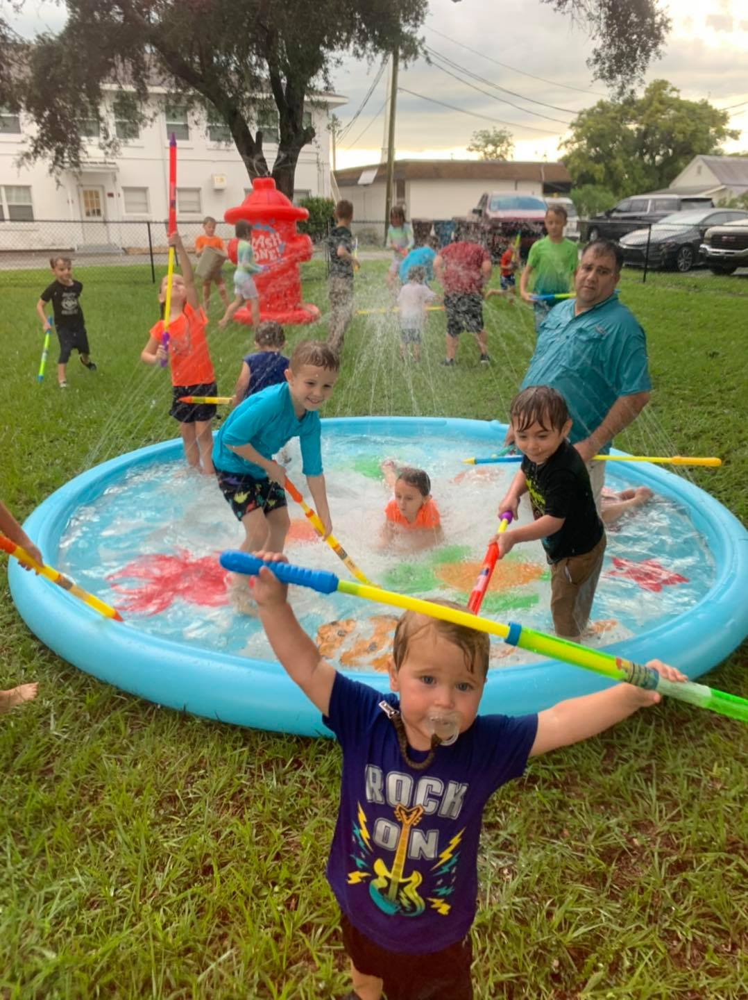

K4C is every Wednesday night from 6-7pm, for ages Pre-school through 5th grade
We also offer Jr. Church during our Morning Worship service.
August 5,6,7th at 6-8:15 pm
Samaritan's Purse is a chirstian humanitarian aid organization and when Christmas time comes around they lead a program called Operation Christmas Child which is people filling up shoeboxes with toys,school supplies, and personal care items, then delivering them to kids all around the world.
Every year we collect various items to put into shoeboxes that are sent all over the world to children in need. We also encourage everyone to pack their own boxes with their families.
There is many ways to help with OCC: